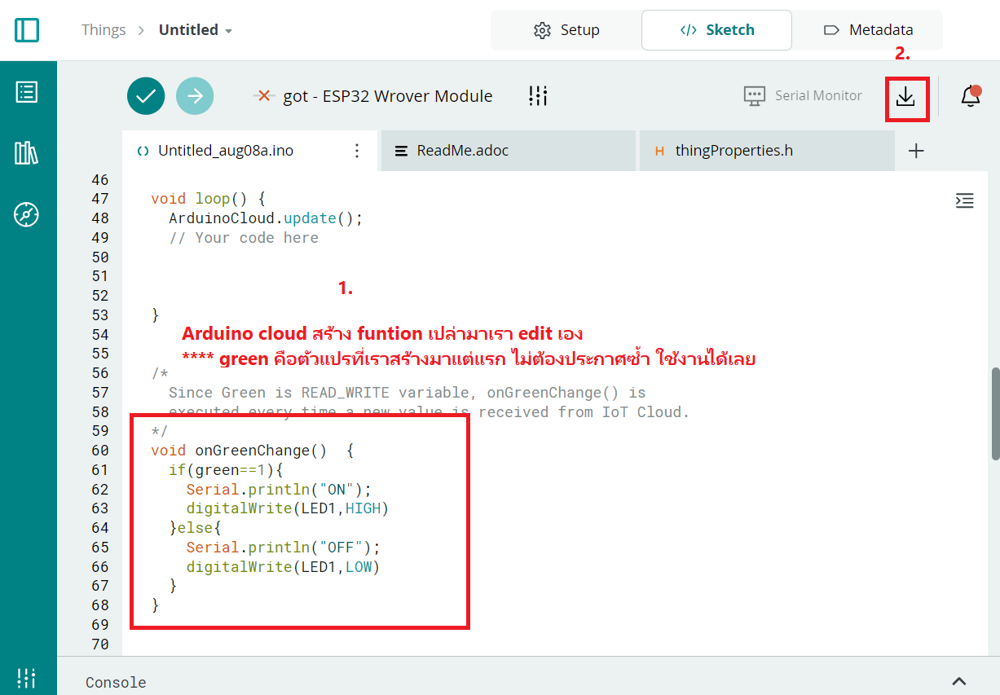

ข้อตกลงผู้อ่าน
***ข้อมูลจากบล็อกนี้จัดทำเมื่อวันที่ 11/08/2567***
ET-ESP32(WROVER) RS485 V2
ET-ESP32(WROVER) RS485 V2 เป็นชุดพัฒนาไมโครคอนโทรลเลอร์ ESP32 ที่ออกแบบมาเพื่อรองรับการติดตั้งและการใช้งานร่วมกับตู้คอนโทรลในกล่อง Din Rail โดยใช้โมดูลสำเร็จรูปจาก Espressif รุ่น ESP32-WROVER เป็น MCU ประจำบอร์ด ชุดนี้ออกแบบมาเพื่อใช้พัฒนาเป็นอุปกรณ์เครือข่ายไร้สาย รองรับการเชื่อมต่อเครือข่ายผ่านสัญญาณ WiFi 2.4GHz/Bluetooth และสัญญาณเครือข่ายความถี่ต่ำที่ใช้เทคโนโลยีการเข้ารหัสสัญญาณแบบ LoRa ซึ่งในประเทศไทยสามารถใช้งานได้ที่ย่านความถี่ 923MHz (AS923-TH) และ NB-IoT

บอร์ดนี้ถูกออกแบบมาเพื่อใช้เป็น Master และ Node Station ในการเชื่อมต่อกับเซ็นเซอร์ต่างๆ โดยสามารถเชื่อมต่อกับอุปกรณ์เซ็นเซอร์ที่จัดเตรียมไว้ภายในบอร์ดได้ทันทีโดยไม่ต้องดัดแปลงวงจร เช่น:
- Relay Contact 4 ชุด และ GPIO TTL 5V 4 บิต เชื่อมต่อผ่านชิป I2C I/O เบอร์ PCF8574/A
- I2C RTC เบอร์ DS3231 สำหรับประยุกต์ใช้งานเกี่ยวกับฐานเวลาและตั้งเวลาทำงานต่างๆ
- I2C EEPROM เบอร์ 24XX สำหรับเก็บค่า Configuration ต่างๆ
- I2C ADC เบอร์ MCP3423 สำหรับรับค่าเซ็นเซอร์แบบแรงดัน 0-2V หรือกระแส 4-20mA 2 ช่อง
- อุปกรณ์เซ็นเซอร์ที่ใช้มาตรฐานการสื่อสารแบบ I2C Bus ที่ใช้แหล่งจ่ายไฟและสัญญาณ 3.3V
- อุปกรณ์เซ็นเซอร์ที่ใช้มาตรฐานการสื่อสารแบบ I2C Bus ที่ใช้แหล่งจ่ายไฟและสัญญาณ 5V
- พอร์ตสื่อสาร RS485 สำหรับเชื่อมต่อกับ sensor หรืออุปกรณ์ขยาย I/O แบบ Modbus RTU
Arduino Cloud IoT
Arduino Cloud IoT เป็นบริการออนไลน์จาก Arduino ที่ช่วยให้ผู้ใช้สามารถสร้างและจัดการโปรเจกต์ Internet of Things (IoT) ได้ง่ายขึ้น โดยคุณสามารถเชื่อมต่อบอร์ด Arduino หรือ ESP32 กับคลาวด์เพื่อควบคุมและตรวจสอบอุปกรณ์ต่างๆ ผ่านอินเทอร์เน็ตจากทุกที่ในโลก
ฟีเจอร์หลักของ Arduino Cloud IoT
- Device Management: จัดการอุปกรณ์หลายตัวที่เชื่อมต่อกับคลาวด์ในโปรเจกต์เดียวกัน
- Data Visualization: สร้างแดชบอร์ดเพื่อติดตามข้อมูลจากเซ็นเซอร์และอุปกรณ์ต่างๆ และแสดงผลข้อมูลเหล่านั้นแบบกราฟิก
- Remote Control: ควบคุมอุปกรณ์จากระยะไกลผ่านอินเทอร์เน็ต เช่น เปิด/ปิดไฟ หรือควบคุมมอเตอร์
- Automations: สร้างเงื่อนไขการทำงานอัตโนมัติ เช่น ถ้าอุณหภูมิสูงเกินไป ให้เปิดพัดลม
- Integration with Third-party Services: รองรับการเชื่อมต่อกับบริการอื่นๆ เช่น Amazon Alexa, Google Assistant หรือบริการคลาวด์อื่นๆ
24V Pilot Lamp
24V Pilot Lamp เป็นหลอดไฟสัญญาณที่ใช้ในการแสดงสถานะของเครื่องจักรหรือระบบควบคุมต่างๆ ในงานอุตสาหกรรมหรือแผงควบคุมไฟฟ้า หลอดไฟนี้ทำงานที่แรงดันไฟฟ้า 24 โวลต์ (24V) ซึ่งเป็นแรงดันไฟฟ้าที่นิยมใช้ในวงจรควบคุมและระบบอุตสาหกรรม
การใช้งานหลักของ 24V Pilot Lamp
- แสดงสถานะการทำงาน: ใช้แสดงสถานะต่างๆ เช่น การเปิด/ปิดของเครื่องจักร การทำงานปกติหรือผิดปกติของระบบ หรือการเตือนเมื่อเกิดข้อผิดพลาด
- ติดตั้งในแผงควบคุม: ติดตั้งในแผงควบคุมไฟฟ้าหรือแผงเครื่องจักร เพื่อให้ผู้ใช้งานสามารถตรวจสอบสถานะของระบบได้ง่าย
- ทนทาน: ถูกออกแบบมาให้ทนทานต่อการใช้งานในสภาวะที่มีการสั่นสะเทือน ความชื้น หรืออุณหภูมิที่หลากหลาย
อ่านค่าอุณหภูมิและความชื้นผ่าน Smart Phone
- เลือกบอร์ด ESP32 Wrover Module
- ติดตั้งหลอดไฟ LED เข้ากับบอร์ด
- ทดสอบการทำงานของ Relay
- Electromechanical Relay (EMR): เป็นรีเลย์ที่ทำงานโดยใช้แม่เหล็กไฟฟ้าในการควบคุมการเปิด-ปิดหน้าสัมผัส มีความทนทานและใช้ในวงจรไฟฟ้าทั่วไป
- Solid State Relay (SSR): เป็นรีเลย์ที่ใช้วงจรอิเล็กทรอนิกส์ในการควบคุมการเปิด-ปิด แทนที่จะใช้หน้าสัมผัสแบบกลไก ทำให้มีความเร็วในการสลับสถานะสูงและไม่มีการสึกหรอของหน้าสัมผัส
- Reed Relay: ใช้หลอดแก้วที่มีหน้าสัมผัสเล็กๆ ภายใน ซึ่งจะทำงานเมื่อมีสนามแม่เหล็ก ทำให้เป็นรีเลย์ที่มีขนาดเล็กและไวต่อการสั่งงาน
- ควบคุมวงจรไฟฟ้า: รีเลย์ใช้ในการควบคุมการเปิด-ปิดของวงจรไฟฟ้าต่างๆ เช่น ควบคุมไฟในบ้าน ควบคุมมอเตอร์ หรือเครื่องใช้ไฟฟ้าอื่นๆ
- ป้องกันวงจร: ใช้ในการป้องกันวงจรโดยตัดการทำงานเมื่อเกิดกระแสเกินหรือไฟฟ้าลัดวงจร
- ควบคุมจากระยะไกล: รีเลย์สามารถใช้ในการควบคุมอุปกรณ์ต่างๆ จากระยะไกลได้ผ่านสัญญาณควบคุม เช่น การควบคุมจากระบบ IoT
- ทดสอบการทำงานของสวิตช์
- ทดสอบการทำงานของสวิตช์กับ XY-MD02 เซ็นเซอร์วัดอุณหภูมิและความชื้น SHT20 Sensor Module RS485
- เซ็นเซอร์ SHT20:
ให้ความแม่นยำในการวัดอุณหภูมิและความชื้น
- อุณหภูมิ: -40°C ถึง 125°C
- ความชื้น: 0% RH ถึง 100% RH
- การเชื่อมต่อผ่าน RS485: ใช้ในการสื่อสารข้อมูลระหว่างเซ็นเซอร์กับไมโครคอนโทรลเลอร์หรือระบบอื่น ๆ ได้อย่างเสถียรและป้องกันสัญญาณรบกวน
- ความแม่นยำ: มีการคาลิเบรตมาจากโรงงาน ทำให้ข้อมูลที่ได้มีความแม่นยำและเชื่อถือได้
- การใช้งาน: เหมาะสำหรับการใช้งานในอุตสาหกรรม, อาคารอัจฉริยะ, ระบบ HVAC, หรือการควบคุมสภาพแวดล้อมในพื้นที่ต่าง ๆ
- เข้าใช้งานจากเว็บไซต์ https://cloud.arduino.cc/
- สร้าง device ใหม่ เลือก Third party device เลือก ESP32 Wrover Module เมื่อสร้างเสร็จจะได้ Device ID และ Secret Key (บันทึกไว้ห้ามหาย)
-
สร้าง thing ใหม่
Add variables และ เลือก Device ที่สร้าง
ใส่ wifi and password แล้วใส่ Secret Key

***ตัวแปรสามารถส่งค่าและรับค่าได้ หากตั้งเป็น read and write:
- การส่งค่าตัวแปรจาก board ไปยัง cloud:
green = 1; หมายถึงส่งค่าไป cloud ให้ green = 1
- การส่งค่าตัวแปรจาก cloud ไปยัง board:
Set button ใช้ green เป็น var หากปิด green = 1 เปิด green = 0 และหากควบคุมผ่านสวิตซ์ หากปิด cloud ส่งค่ากลับมา green = 1
- การส่งค่าตัวแปรจาก board ไปยัง cloud:
-
สร้าง Dashboard
เข้าไปที่หน้า Dashboard เลือก control ที่ต้องการ
Set Variables ที่ต้องการ
-
ดาวน์โหลดไฟล์แล้ว compile
ไปที่แถบ thingProperties.h ใส่ Device ID, wifi, pass, Device key ให้เรียบร้อย
- Code
Download File #include "arduino_secrets.h" /* Sketch generated by the Arduino IoT Cloud Thing "Untitled" https://create.arduino.cc/cloud/things/c4e9550e-1345-4044-a8ef-b59c37795212 Arduino IoT Cloud Variables description The following variables are automatically generated and updated when changes are made to the Thing bool green; Variables which are marked as READ/WRITE in the Cloud Thing will also have functions which are called when their values are changed from the Dashboard. These functions are generated with the Thing and added at the end of this sketch. */ #include "ModbusMaster.h" //https://github.com/4-20ma/ModbusMaster #define Slave_ID 1 #define RX_PIN 26 #define TX_PIN 27 ModbusMaster modbus; #include "thingProperties.h" #include "Arduino.h" #include "PCF8574.h" // https://github.com/xreef/PCF8574_library #define I2C_Address 0x20 #define I2C_SDA_Pin 21 #define I2C_SCL_Pin 22 // Instantiate Wire for generic use at 100kHz TwoWire I2Ctwo = TwoWire(1); // Set i2c address PCF8574 pcf8574(&I2Ctwo, I2C_Address, I2C_SDA_Pin, I2C_SCL_Pin); void setup() { // Initialize serial and wait for port to open: Serial.begin(9600); // This delay gives the chance to wait for a Serial Monitor without blocking if none is found pcf8574.pinMode(0, OUTPUT); pcf8574.pinMode(1, OUTPUT); pcf8574.pinMode(2, OUTPUT); pcf8574.pinMode(3, OUTPUT); pcf8574.begin(); Serial.begin(9600, SERIAL_8N1); Serial2.begin(9600, SERIAL_8N1, RX_PIN, TX_PIN); modbus.begin(Slave_ID, Serial2); delay(1500); // Defined in thingProperties.h initProperties(); // Connect to Arduino IoT Cloud ArduinoCloud.begin(ArduinoIoTPreferredConnection); /* The following function allows you to obtain more information related to the state of network and IoT Cloud connection and errors the higher number the more granular information you’ll get. The default is 0 (only errors). Maximum is 4 */ setDebugMessageLevel(2); ArduinoCloud.printDebugInfo(); } void loop() { ArduinoCloud.update(); // Your code here } void onYellowChange() { if(yellow==1){ Serial.println("yellow-->ON"); pcf8574.digitalWrite(1, HIGH); delay(500); }else{ Serial.println("yellow-->OFF"); pcf8574.digitalWrite(1, LOW); delay(500); } } /* Since Red is READ_WRITE variable, onRedChange() is executed every time a new value is received from IoT Cloud. */ void onRedChange() { // Add your code here to act upon Red change if(red==1){ Serial.println("red-->ON"); pcf8574.digitalWrite(2, HIGH); delay(500); }else{ Serial.println("red-->OFF"); pcf8574.digitalWrite(2, LOW); delay(500); } } /* Since White is READ_WRITE variable, onWhiteChange() is executed every time a new value is received from IoT Cloud. */ void onWhiteChange() { if(white==1){ Serial.println("white-->ON"); pcf8574.digitalWrite(3, HIGH); delay(500); }else{ Serial.println("white-->OFF"); pcf8574.digitalWrite(3, LOW); delay(500); } // Add your code here to act upon White change } /* Since Tempp is READ_WRITE variable, onTemppChange() is executed every time a new value is received from IoT Cloud. */ void onTemppChange() { long currentMillis = millis(); if (currentMillis - lastMillis > 1000) { uint8_t result = modbus.readInputRegisters(1, 2); if (getResultMsg(&modbus, result)) { Serial.println(); double res_dbl = modbus.getResponseBuffer(0) / 10; String res = "Temperature: " + String(res_dbl) + " C\r\n"; res_dbl = modbus.getResponseBuffer(1) / 10; res += "Humidity: " + String(res_dbl) + " %"; Serial.println(res); tempp = String(res_dbl); } lastMillis = currentMillis; } } bool getResultMsg(ModbusMaster *node, uint8_t result) { String tmpstr2 = "\r\n"; switch (result) { case node->ku8MBSuccess: return true; break; case node->ku8MBIllegalFunction: tmpstr2 += "Illegal Function"; break; case node->ku8MBIllegalDataAddress: tmpstr2 += "Illegal Data Address"; break; case node->ku8MBIllegalDataValue: tmpstr2 += "Illegal Data Value"; break; case node->ku8MBSlaveDeviceFailure: tmpstr2 += "Slave Device Failure"; break; case node->ku8MBInvalidSlaveID: tmpstr2 += "Invalid Slave ID"; break; case node->ku8MBInvalidFunction: tmpstr2 += "Invalid Function"; break; case node->ku8MBResponseTimedOut: tmpstr2 += "Response Timed Out"; break; case node->ku8MBInvalidCRC: tmpstr2 += "Invalid CRC"; break; default: tmpstr2 += "Unknown error: " + String(result); break; } Serial.println(tmpstr2); return false; } // Add your code here to act upon Tempp change } /* Since Green is READ_WRITE variable, onGreenChange() is executed every time a new value is received from IoT Cloud. */ void onGreenChange() { if(green==1){ Serial.println("Green-->ON"); pcf8574.digitalWrite(0, HIGH); delay(500); }else{ Serial.println("Green-->OFF"); pcf8574.digitalWrite(0, LOW); delay(500); } }
รีเลย์ (Relay) คืออุปกรณ์ไฟฟ้าที่ทำหน้าที่เป็นสวิตช์ไฟฟ้าในการควบคุมการเปิด-ปิดวงจรไฟฟ้า โดยใช้สัญญาณไฟฟ้าต่ำหรือสัญญาณควบคุมในการเปิดหรือปิดวงจรที่มีแรงดันไฟฟ้าสูงกว่า รีเลย์ทำงานโดยใช้หลักการของแม่เหล็กไฟฟ้า ซึ่งเมื่อมีกระแสไฟฟ้าไหลผ่านขดลวดในรีเลย์ จะเกิดสนามแม่เหล็กที่ทำให้หน้าสัมผัส (contact) ของรีเลย์เปิดหรือปิดตามการออกแบบ
ประเภทของรีเลย์:
การใช้งานของรีเลย์:
โค้ดตัวอย่าง
#include "Arduino.h"
#include "PCF8574.h"
#define I2C_Address 0x20
#define I2C_SDA_Pin 21
#define I2C_SCL_Pin 22
TwoWire I2Ctwo = TwoWire(1);
PCF8574 pcf8574(&I2Ctwo, I2C_Address, I2C_SDA_Pin, I2C_SCL_Pin);
void setup() {
Serial.begin(115200);
pcf8574.pinMode(0, OUTPUT);
pcf8574.pinMode(1, OUTPUT);
pcf8574.pinMode(2, OUTPUT);
pcf8574.pinMode(3, OUTPUT);
pcf8574.pinMode(4, INPUT_PULLUP);
pcf8574.pinMode(5, INPUT_PULLUP);
pcf8574.pinMode(6, INPUT_PULLUP);
pcf8574.pinMode(7, INPUT_PULLUP);
pcf8574.begin();
}
int pin = 0;
void loop() {
Serial.println(pin);
pcf8574.digitalWrite(pin, LOW); delay(500);
pcf8574.digitalWrite(pin, HIGH); delay(500);
pin = pin >= 3 ? 0 : pin += 1;
}
#include "Arduino.h"
#include "PCF8574.h" // https://github.com/xreef/PCF8574_library
#define I2C_Address 0x20
#define I2C_SDA_Pin 21
#define I2C_SCL_Pin 22
// Instantiate Wire for generic use at 100kHz
TwoWire I2Ctwo = TwoWire(1);
// Set i2c address
PCF8574 pcf8574(&I2Ctwo, I2C_Address, I2C_SDA_Pin, I2C_SCL_Pin);
void setup() {
Serial.begin(115200);
pcf8574.pinMode(0, OUTPUT);
pcf8574.pinMode(1, OUTPUT);
pcf8574.pinMode(2, OUTPUT);
pcf8574.pinMode(3, OUTPUT);
pcf8574.pinMode(4, INPUT_PULLUP);
pcf8574.pinMode(5, INPUT_PULLUP);
pcf8574.pinMode(6, INPUT_PULLUP);
pcf8574.pinMode(7, INPUT_PULLUP);
pcf8574.begin();
}
int Counter = 0;
void loop() {
if (pcf8574.digitalRead(P4) == LOW) {
delay(100);
while (pcf8574.digitalRead(P4) == LOW)
delay(50);
Counter++;
delay(100);
Serial.println(Counter);
pcf8574.digitalWrite(P0, Counter % 2);
}
}

XY-MD02 เป็นโมดูลเซ็นเซอร์ที่ใช้สำหรับวัดอุณหภูมิและความชื้น ซึ่งใช้เซ็นเซอร์ SHT20 ที่มีความแม่นยำสูงสำหรับการวัดทั้งสองค่าดังกล่าว ตัวโมดูลนี้มีการเชื่อมต่อผ่าน RS485 ซึ่งเป็นมาตรฐานการสื่อสารที่ใช้กันอย่างแพร่หลายในการส่งข้อมูลแบบอนุกรม (Serial Communication) ที่มีความเสถียรในระยะทางไกล
คุณสมบัติหลักของ XY-MD02:
ติดตั้ง ModbusMaster by Doc Walker V2.0.1
#include "ModbusMaster.h" //https://github.com/4-20ma/ModbusMaster
#define Slave_ID 1
#define RX_PIN 26
#define TX_PIN 27
ModbusMaster modbus;
void setup() {
Serial.begin(9600, SERIAL_8N1);
Serial2.begin(9600, SERIAL_8N1, RX_PIN, TX_PIN);
modbus.begin(Slave_ID, Serial2);
}
long lastMillis = 0;
void loop() {
long currentMillis = millis();
if (currentMillis - lastMillis > 1000) {
uint8_t result = modbus.readInputRegisters(1, 2);
if (getResultMsg(&modbus, result)) {
Serial.println();
double res_dbl = modbus.getResponseBuffer(0) / 10;
String res = "Temperature: " + String(res_dbl) + " C\r\n";
res_dbl = modbus.getResponseBuffer(1) / 10;
res += "Humidity: " + String(res_dbl) + " %";
Serial.println(res);
}
lastMillis = currentMillis;
}
}
bool getResultMsg(ModbusMaster *node, uint8_t result) {
String tmpstr2 = "\r\n";
switch (result) {
case node->ku8MBSuccess:
return true;
break;
case node->ku8MBIllegalFunction:
tmpstr2 += "Illegal Function";
break;
case node->ku8MBIllegalDataAddress:
tmpstr2 += "Illegal Data Address";
break;
case node->ku8MBIllegalDataValue:
tmpstr2 += "Illegal Data Value";
break;
case node->ku8MBSlaveDeviceFailure:
tmpstr2 += "Slave Device Failure";
break;
case node->ku8MBInvalidSlaveID:
tmpstr2 += "Invalid Slave ID";
break;
case node->ku8MBInvalidFunction:
tmpstr2 += "Invalid Function";
break;
case node->ku8MBResponseTimedOut:
tmpstr2 += "Response Timed Out";
break;
case node->ku8MBInvalidCRC:
tmpstr2 += "Invalid CRC";
break;
default:
tmpstr2 += "Unknown error: " + String(result);
break;
}
Serial.println(tmpstr2);
return false;
}